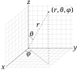

coordinate

Definition: In geometry, a coordinate system is a system that uses one or more numbers, or coordinates, to uniquely determine the position of the points or other geometric elements on a manifold such as Euclidean space. The order of the coordinates is significant, and they are sometimes identified by their position in an ordered tuple and sometimes by a letter, as in "the x-coordinate". The coordinates are taken to be real numbers in elementary mathematics, but may be complex numbers or elements of a more abstract system such as a commutative ring. The use of a coordinate system allows problems in geometry to be translated into problems about numbers and vice versa; this is the basis of analytic geometry.
Source: Wikipedia
Wikipedia Page (Something wrong with this association? Let us know.)
Wikidata Page (Something wrong with this association? Let us know.)